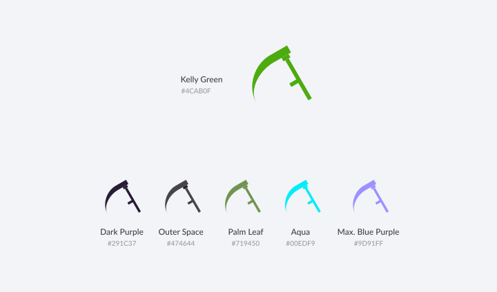
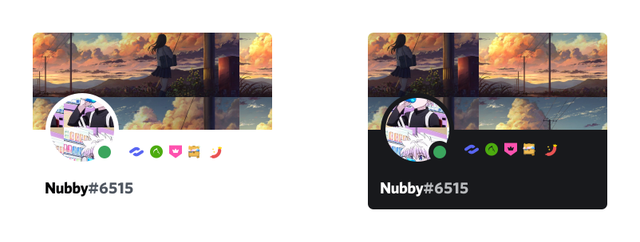
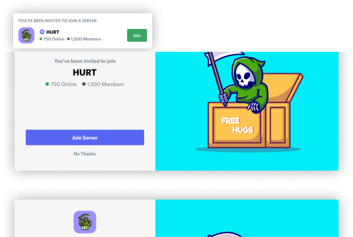
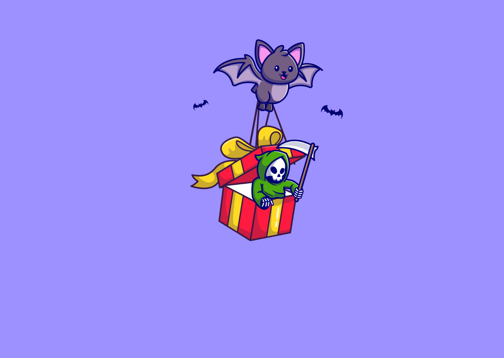
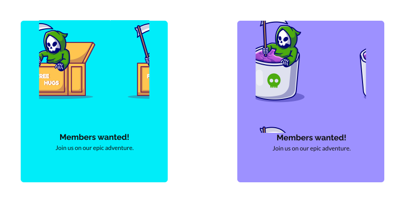

Defining the task
My task was to create a branding package for the Discord channel such as: a logo, banner, icons, and stickers.
HurtBrand Identity Design
BRAND IDENTITY FOR A GAMING GROUP
HURT is a Discord server for a group of gamers that play Lord of the Rings: Rise to War. Its the place where strategies are formed and plans are put in motion.
I was tasked to created the brand identity of the group.
Tool(s) used: Adobe Illustrator, Figma
Defining the task
My task was to create a branding package for the Discord channel such as: a logo, banner, icons, and stickers.
Assets specs
I searched through discord.com and compiled a list of the sizes needed for each asset.
The style of gaming logos
The gaming industry favours an emblem or badge logo, which is a design that wraps texts and graphic elements in a stylized, layered and organized manner, such as in a shield or custom shape, to represent the gaming groups or eSports teams.
Choosing keywords to set the tone
To guide me forward I wrote down a few keywords inspired by the words “hurt” and “gaming”.
pain • violence • death
weapon • damage • fighting • poison • toxic
Based on the keywords, I chose to use the grim reaper (which I called “Grim”) as the mascot, green (#4CAB0F) as the brand colour, and purple(#9D91FF) as a secondary colour because they go well together and both are used to represent poisonous or toxic elements in gaming.
Designing the logo
The logo is made of the 3 elements most gaming symbols are: a shield, Grim the mascot, and a logotype, all perfectly aligned on top of a purple background.
For the logotype I used Neo Esports, a modern typeface perfect for e-sport logos, games, posters, and other creative works.

Server roles
The HURT server has 8 roles that can be divided in 3 categories:
The colour scheme of the Server Role icons were chosen to contrast well on both light and dark mode.
Server invitations
The server invitations sent by Discord feature the logo and a Grim illustration on top of a brand colour.
Exporting the assets
I exported each asset at the identified during the Define phase, sent them over to the group admins via WeTransfer, and made myself available for redesigns.
Pho, HURT co-founder
“The logo Iulian designed is fun and scary, and it perfectly captures the HURT atmosphere.”
Social media
For any kind of social media posts and documents a combination of Raleway (for headings) and Lato (for the body type) is to be used.
